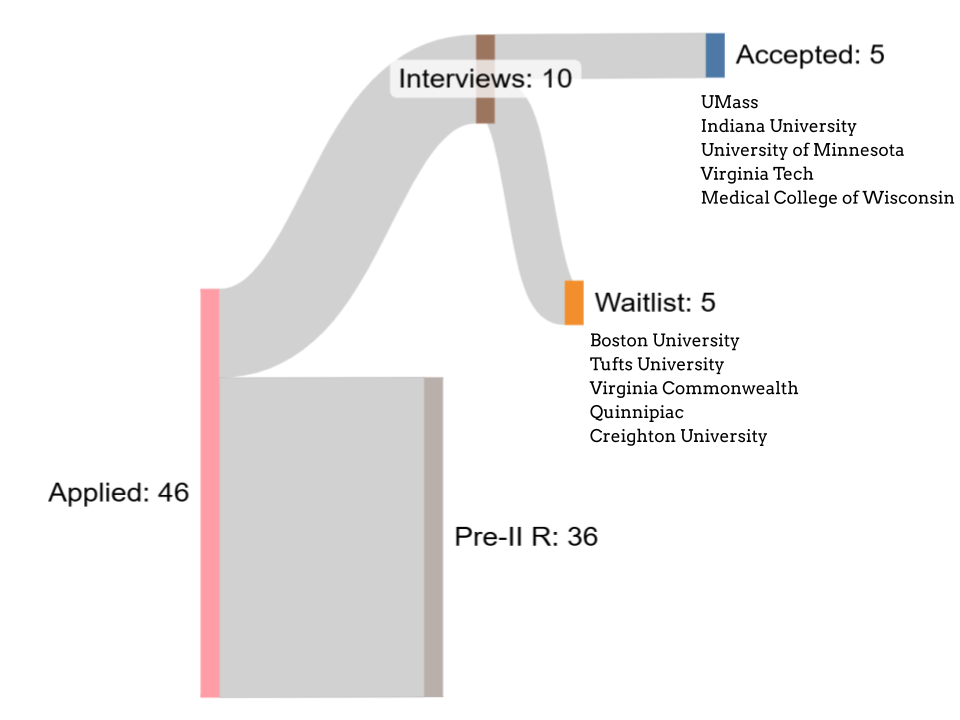

Hi — I'm the founder of Talcott Ridge Advising.
I applied to medical school in the 2026 cycle and secured 10 MD interviews and 5 acceptances. I'm now a first-year medical student at the University of Minnesota Duluth, where I'm a full-tuition Dean's Scholarship recipient.
I started Talcott Ridge because I'd rather share the knowledge I gained in my experience and the experience of many others online openly than put it behind a $5,000 paywall such that anyone can access it.
